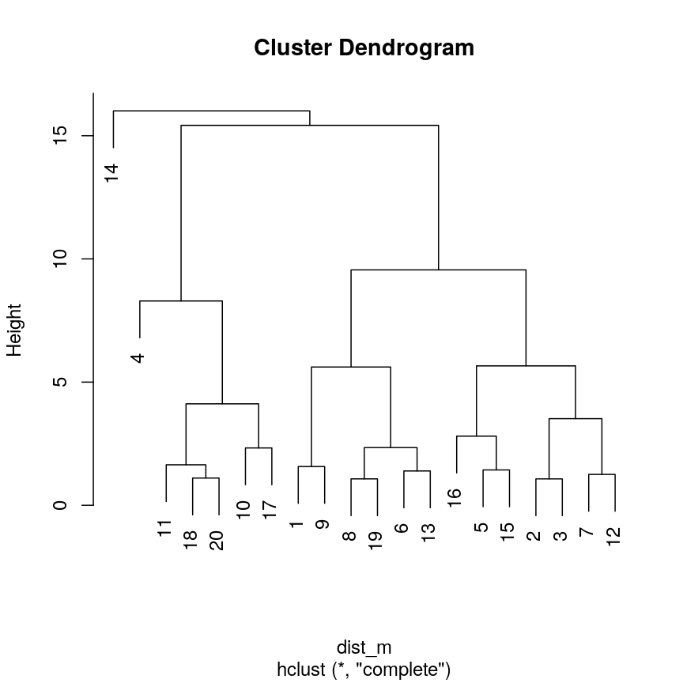
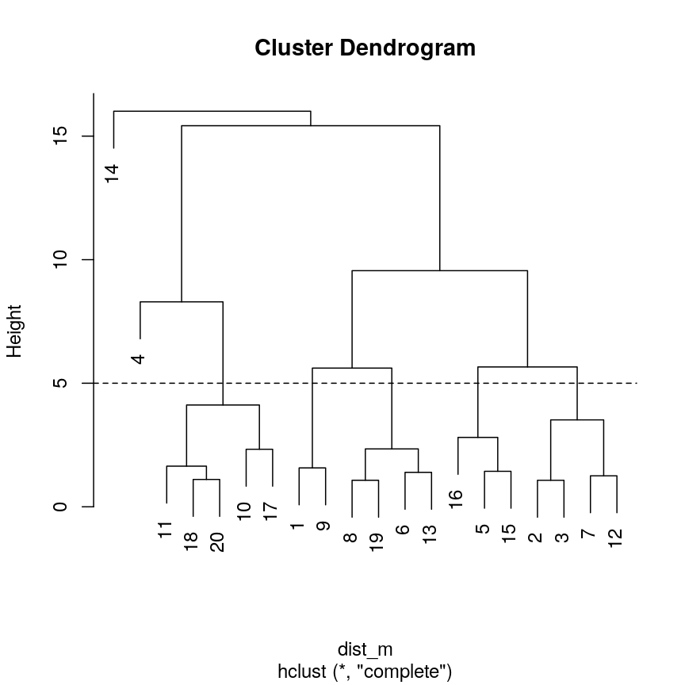
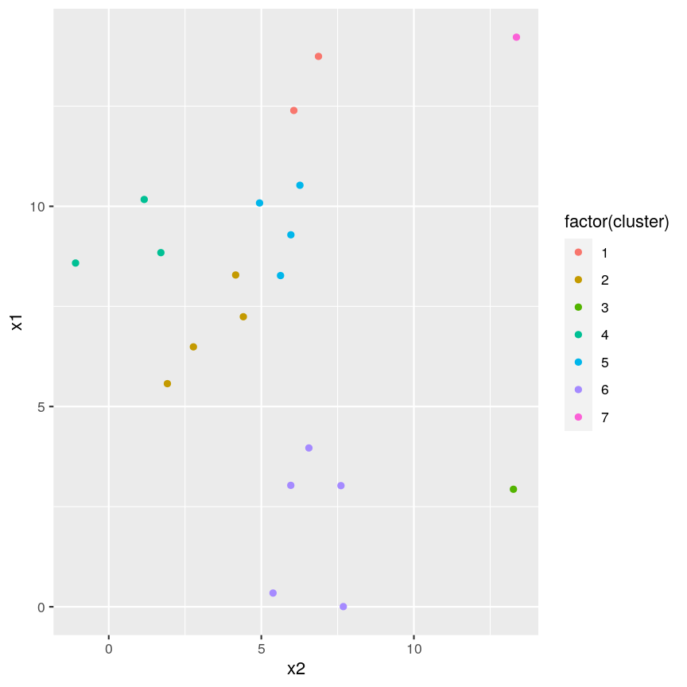
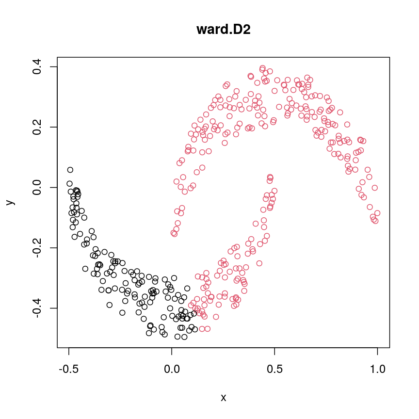
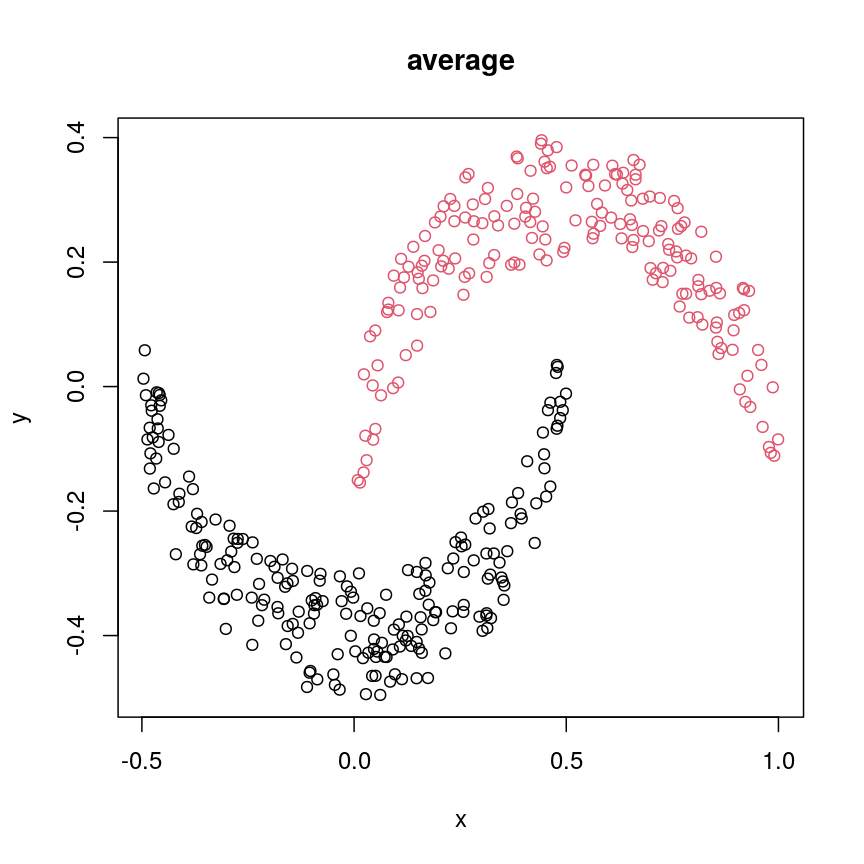
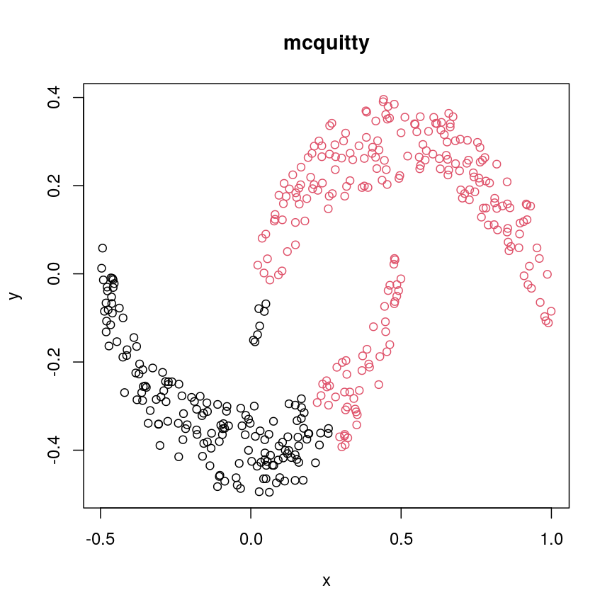
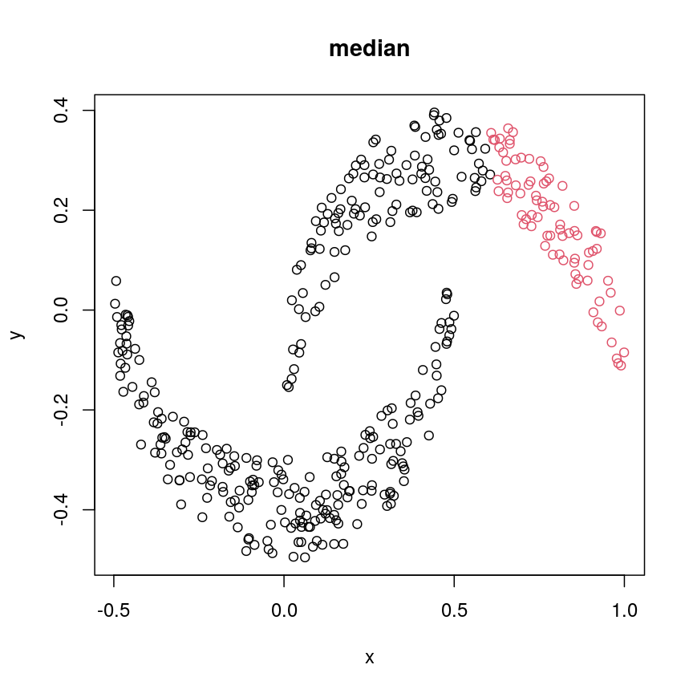
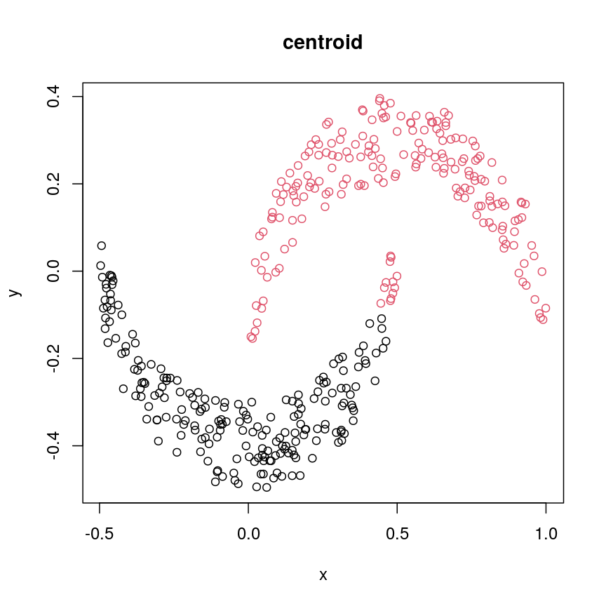

Hierarchical clustering
Overview
Teaching: 60 min
Exercises: 10 minQuestions
What is hierarchical clustering and how does it differ from other clustering methods?
How do we carry out hierarchical clustering in R?
What distance matrix and linkage methods should we use?
How can we validate identified clusters?
Objectives
Understand when to use hierarchical clustering on high-dimensional data.
Perform hierarchical clustering on high-dimensional data and evaluate dendrograms.
Explore different distance matrix and linkage methods.
Use the Dunn index to validate clustering methods.
Why use hierarchical clustering on high-dimensional data?
When analysing high-dimensional data in the life sciences, it is often useful to identify groups of similar data points to understand more about the relationships within the dataset. In hierarchical clustering an algorithm groups similar data points (or observations) into groups (or clusters). This results in a set of clusters, where each cluster is distinct, and the data points within each cluster have similar characteristics. The clustering algorithm works by iteratively grouping data points so that different clusters may exist at different stages of the algorithm’s progression.
Unlike K-means clustering, hierarchical clustering does not require the number of clusters $k$ to be specified by the user before the analysis is carried out. Hierarchical clustering also provides an attractive dendrogram, a tree-like diagram showing the degree of similarity between clusters.
The dendrogram is a key feature of hierarchical clustering. This tree-shaped graph allows the similarity between data points in a dataset to be visualised and the arrangement of clusters produced by the analysis to be illustrated. Dendrograms are created using a distance (or dissimilarity) that quantify how different are pairs of observations, and a clustering algorithm to fuse groups of similar data points together.
In this episode we will explore hierarchical clustering for identifying clusters in high-dimensional data. We will use agglomerative hierarchical clustering (see box) in this episode.
Agglomerative and Divisive hierarchical clustering
There are two main methods of carrying out hierarchical clustering: agglomerative clustering and divisive clustering. The former is a ‘bottom-up’ approach to clustering whereby the clustering approach begins with each data point (or observation) being regarded as being in its own separate cluster. Pairs of data points are merged as we move up the tree. Divisive clustering is a ‘top-down’ approach in which all data points start in a single cluster and an algorithm is used to split groups of data points from this main group.
The agglomerative hierarchical clustering algorithm
To start with, we measure distance (or dissimilarity) between pairs of observations. Initially, and at the bottom of the dendrogram, each observation is considered to be in its own individual cluster. We start the clustering procedure by fusing the two observations that are most similar according to a distance matrix. Next, the next-most similar observations are fused so that the total number of clusters is number of observations - 2 (see panel below). Groups of observations may then be merged into a larger cluster (see next panel below, green box). This process continues until all the observations are included in a single cluster.

Figure 1a: Example data showing two clusters of observation pairs
Figure 1b: Example data showing fusing of one observation into larger cluster
A motivating example
To motivate this lesson, let’s first look at an example where hierarchical clustering is really useful, and then we can understand how to apply it in more detail. To do this, we’ll return to the large methylation dataset we worked with in the regression lessons. Let’s load the data and look at it.
library("minfi")
library("here")
library("ComplexHeatmap")
methyl <- readRDS(here("data/methylation.rds"))
# transpose this Bioconductor dataset to show features in columns
methyl_mat <- t(assay(methyl))
Looking at a heatmap of these data, we may spot some patterns – many columns appear to have a similar methylation levels across all rows. However, they are all quite jumbled at the moment, so it’s hard to tell how many line up exactly.
plot of chunk heatmap-noclust
We can order these data to make the patterns more clear using hierarchical
clustering. To do this, we can change the arguments we pass to
Heatmap() from the ComplexHeatmap package. Heatmap()
groups features based on dissimilarity (here, Euclidean distance) and orders
rows and columns to show clustering of features and observations.
Heatmap(methyl_mat,
name = "Methylation level",
cluster_rows = TRUE, cluster_columns = TRUE,
row_dend_width = unit(0.2, "npc"),
column_dend_height = unit(0.2, "npc"),
show_row_names = FALSE, show_column_names = FALSE,
row_title="Individuals", column_title = "Methylation sites"
)
plot of chunk heatmap-clust
We can see that clustering the features (CpG sites) results in an overall gradient of high to low methylation levels from left to right. Maybe more interesting is the fact that the rows (corresponding to individuals) are now grouped according to methylation patterns. For example, 12 samples seem to have lower methylation levels for a small subset of CpG sites in the middle, relative to all the other samples. It’s not clear without investigating further what the cause of this is – it could be a batch effect, or a known grouping (e.g., old vs young samples). However, clustering like this can be a useful part of exploratory analysis of data to build hypotheses.
Now, let’s cover the inner workings of hierarchical clustering in more detail. There are two things to consider before carrying out clustering:
- how to define dissimilarity between observations using a distance matrix, and
- how to define dissimilarity between clusters and when to fuse separate clusters.
Creating the distance matrix
Agglomerative hierarchical clustering is performed in two steps: calculating the distance matrix (containing distances between pairs of observations) and iteratively grouping observations into clusters using this matrix.
There are different ways to specify a distance matrix for clustering:
- Specify distance as a pre-defined option using the
methodargument indist(). Methods includeeuclidean(default),maximumandmanhattan. - Create a self-defined function which calculates distance from a matrix or from two vectors. The function should only contain one argument.
Of pre-defined methods of calculating the distance matrix, Euclidean is one of the most commonly used. This method calculates the shortest straight-line distances between pairs of observations.
Another option is to use a correlation matrix as the input matrix to the clustering algorithm. The type of distance matrix used in hierarchical clustering can have a big effect on the resulting tree. The decision of which distance matrix to use before carrying out hierarchical clustering depends on the type of data and question to be addressed.
Linkage methods
The second step in performing hierarchical clustering after defining the distance matrix (or another function defining similarity between data points) is determining how to fuse different clusters.
Linkage is used to define dissimilarity between groups of observations (or clusters) and is used to create the hierarchical structure in the dendrogram. Different linkage methods of creating a dendrogram are discussed below.
hclust() supports various linkage methods (e.g complete,
single, ward D, ward D2, average, median) and these are also supported
within the Heatmap() function. The method used to perform hierarchical
clustering in Heatmap() can be specified by the arguments
clustering_method_rows and clustering_method_columns. Each linkage method
uses a slightly different algorithm to calculate how clusters are fused together
and therefore different clustering decisions are made depending on the linkage
method used.
Complete linkage (the default in hclust()) works by computing all pairwise
dissimilarities between data points in different clusters. For each pair of two clusters,
it sets their dissimilarity ($d$) to the maximum dissimilarity value observed
between any of these clusters’ constituent points. The two clusters
with smallest value of $d$ are then fused.
Computing a dendrogram
Dendograms are useful tools to visualise the grouping of points and clusters into bigger clusters.
We can create and plot dendrograms in R using hclust() which takes
a distance matrix as input and creates the associated tree using hierarchical
clustering. Here we create some example data to carry out hierarchical
clustering.
Let’s generate 20 data points in 2D space. Each point belongs to one of three classes. Suppose we did not know which class data points belonged to and we want to identify these via cluster analysis. Hierarchical clustering carried out on the data can be used to produce a dendrogram showing how the data is partitioned into clusters. But how do we interpret this dendrogram? Let’s explore this using our example data.
#First, create some example data with two variables x1 and x2
set.seed(450)
example_data <- data.frame(
x1 = rnorm(20, 8, 4.5),
x2 = rnorm(20, 6, 3.4)
)
#plot the data and name data points by row numbers
plot(example_data$x1, example_data$x2, type = "n")
text(
example_data$x1,
example_data$x2,
labels = rownames(example_data),
cex = 0.7
)
plot of chunk plotexample
## calculate distance matrix using euclidean distance
dist_m <- dist(example_data, method = "euclidean")
Challenge 1
Use
hclust()to implement hierarchical clustering using the distance matrixdist_mand thecompletelinkage method and plot the results as a dendrogram usingplot().Solution:
clust <- hclust(dist_m, method = "complete") plot(clust)plot of chunk plotclustex
This dendrogram shows similarities/differences in distances between data points. Each leaf of the dendrogram represents one of the 20 data points. These leaves fuse into branches as the height increases. Observations that are similar fuse into the same branches. The height at which any two data points fuse indicates how different these two points are. Points that fuse at the top of the tree are very different from each other compared with two points that fuse at the bottom of the tree, which are quite similar. You can see this by comparing the position of similar/dissimilar points according to the scatterplot with their position on the tree.
Identifying clusters based on the dendrogram
To do this, we can make a horizontal cut through the dendrogram at a user-defined height. The sets of observations beneath this cut can be thought of as distinct clusters. For example, a cut at height 10 produces two downstream clusters while a cut at height 4 produces six downstream clusters.
We can cut the dendrogram to determine number of clusters at different heights
using cutree(). This function cuts a dendrogram into several
groups (or clusters) where the number of desired groups is controlled by the
user, by defining either k (number of groups) or h (height at which tree is
cut).
## k is a user defined parameter determining
## the desired number of clusters at which to cut the treee
cutree(clust, k = 3)
[1] 1 1 1 2 1 1 1 1 1 2 2 1 1 3 1 1 2 2 1 2
## h is a user defined parameter determining
## the numeric height at which to cut the tree
cutree(clust, h = 10)
[1] 1 1 1 2 1 1 1 1 1 2 2 1 1 3 1 1 2 2 1 2
## both give same results
four_cut <- cutree(clust, h = 4)
## we can produce the cluster each observation belongs to
## using the mutate and count functions
library(dplyr)
example_cl <- mutate(example_data, cluster = four_cut)
count(example_cl, cluster)
cluster n
1 1 2
2 2 4
3 3 1
4 4 3
5 5 4
6 6 2
7 7 3
8 8 1
#plot cluster each point belongs to on original scatterplot
library(ggplot2)
ggplot(example_cl, aes(x = x2, y = x1, color = factor(cluster))) + geom_point()
plot of chunk cutree
Note that this cut produces 8 clusters (two before the cut and another six downstream of the cut).
Challenge 2:
Identify the value of
kincutree()that gives the same output ash = 5Solution:
plot(clust) ## create horizontal line at height = 5 abline(h = 5, lty = 2)plot of chunk h-k-ex-plot
cutree(clust, h = 5)[1] 1 2 2 3 4 5 2 5 1 6 6 2 5 7 4 4 6 6 5 6cutree(clust, k = 7)[1] 1 2 2 3 4 5 2 5 1 6 6 2 5 7 4 4 6 6 5 6five_cut <- cutree(clust, h = 5) library(dplyr) example_cl <- mutate(example_data, cluster = five_cut) count(example_cl, cluster)cluster n 1 1 2 2 2 4 3 3 1 4 4 3 5 5 4 6 6 5 7 7 1library(ggplot2) ggplot(example_cl, aes(x=x2, y = x1, color = factor(cluster))) + geom_point()plot of chunk h-k-ex-plot
Seven clusters (
k = 7) gives similar results toh = 5. You can plot a horizontal line on the dendrogram ath = 5to help identify corresponding value ofk.
Highlighting dendrogram branches
In addition to visualising cluster identity in scatter plots, it is also possible to
highlight branches in dentrograms. In this example, we calculate a distance matrix between
samples in the methyl_mat dataset. We then draw boxes round clusters obtained with cutree.
## create a distance matrix using euclidean method
distmat <- dist(methyl_mat)
## hierarchical clustering using complete method
clust <- hclust(distmat)
## plot resulting dendrogram
plot(clust)
## draw border around three clusters
rect.hclust(clust, k = 3, border = 2:6)
## draw border around two clusters
rect.hclust(clust, k = 2, border = 2:6)
plot of chunk plot-clust-method
We can also colour clusters downstream of a specified cut using color_branches()
from the dendextend package.
## cut tree at height = 4
cut <- cutree(clust, h = 50)
library("dendextend")
avg_dend_obj <- as.dendrogram(clust)
## colour branches of dendrogram depending on clusters
plot(color_branches(avg_dend_obj, h = 50))
plot of chunk plot-coloured-branches
The effect of different linkage methods
Now let us look into changing the default behaviour of hclust(). Imagine we have two crescent-shaped point clouds as shown below.
# These two functions are to help us make crescents. Don't worry it you do not understand all this code.
# The importent bit is the object "cres", which consists of two columns (x and y coordinates of two crescents).
is.insideCircle <- function(co, r=0.5, offs=c(0,0)){
sqrt((co[,1]+offs[1])^2 + (co[,2]+offs[2])^2) <= r
}
make.crescent <- function(n){
raw <- cbind(x=runif(n)-0.5, y=runif(n)-0.5)
raw[is.insideCircle(raw) & !is.insideCircle(raw, offs=c(0, -0.2)),]
}
# make x/y data in shape of two crescents
set.seed(123)
cres1 <- make.crescent(1000) # 1st crescent
cres2 <- make.crescent(1000) # 2nd crescent
cres2[,2] <- -cres2[,2] -0.1 # flip 2nd crescent upside-down and shift down
cres2[,1] <- cres2[,1] + 0.5 # shift second crescent to the right
cres <- rbind(cres1, cres2) # concatente x/y values
plot(cres)
plot of chunk crescents
We might expect that the crescents are resolved into separate clusters. But if we run hierarchical clustering with the default arguments, we get this:
cresClass <- cutree(hclust(dist(cres)), k=2) # save partition for colouring
plot(cres, col=cresClass) # colour scatterplot by partition
plot of chunk cresClustDefault
Challenge 3
Carry out hierarchical clustering on the
cresdata that we generated above. Try out different linkage methods and usecutree()to split each resulting dendrogram into two clusters. Plot the results colouring the dots according to their inferred cluster identity.Which method(s) give you the expected clustering outcome?
Hint: Check
?hclustto see the possible values of the argumentmethod(the linkage method used).Solution:
#?hclust # "complete", "single", "ward.D", "ward.D2", "average", "mcquitty", "median" or "centroid" cresClassSingle <- cutree(hclust(dist(cres),method = "single"), k=2) plot(cres, col=cresClassSingle, main="single")plot of chunk plot-clust-comp
cresClassWard.D <- cutree(hclust(dist(cres), method="ward.D"), k=2) plot(cres, col=cresClassWard.D, main="ward.D")plot of chunk plot-clust-wardD
cresClassWard.D2 <- cutree(hclust(dist(cres), method="ward.D2"), k=2) plot(cres, col=cresClassWard.D2, main="ward.D2")plot of chunk plot-clust-wardD2
cresClassAverage <- cutree(hclust(dist(cres), method="average"), k=2) plot(cres, col=cresClassAverage, main="average")plot of chunk plot-clust-average
cresClassMcquitty <- cutree(hclust(dist(cres), method="mcquitty"), k=2) plot(cres, col=cresClassMcquitty, main="mcquitty")plot of chunk plot-clust-mcq
cresClassMedian<- cutree(hclust(dist(cres), method="median"), k=2) plot(cres, col=cresClassMedian, main="median")plot of chunk plot-clust-median
cresClassCentroid<- cutree(hclust(dist(cres), method="centroid"), k=2) plot(cres, col=cresClassCentroid, main="centroid")plot of chunk plot-clust-centroid
The linkage methods
single,ward.D, andaverageresolve each crescent as a separate cluster.
The help page of hclust() gives some intuition on linkage methods. It describes complete
(the default) and single as opposite ends of a spectrum with all other methods in between.
When using complete linkage, the distance between two clusters is assumed to be the distance
between both clusters’ most distant points. This opposite it true for single linkage, where
the minimum distance between any two points, one from each of two clusters is used. Single
linkage is described as friends-of-friends appporach - and really, it groups all close-together
points into the same cluster (thus resolving one cluster per crescent). Complete linkage on the
other hand recognises that some points a the tip of a crescent are much closer to points in the
other crescent and so it splits both crescents.
Using different distance methods
So far, we’ve been using Euclidean distance to define the dissimilarity or distance between observations. However, this isn’t always the best metric for how dissimilar different observations are. Let’s make an example to demonstrate. Here, we’re creating two samples each with ten observations of random noise:
set.seed(20)
cor_example <- data.frame(
sample_a = rnorm(10),
sample_b = rnorm(10)
)
rownames(cor_example) <- paste(
"Feature", 1:nrow(cor_example)
)
Now, let’s create a new sample that has exactly the same pattern across all
our features as sample_a, just offset by 5:
cor_example$sample_c <- cor_example$sample_a + 5
You can see that this is a lot like the assay() of our methylation object
from earlier, where columns are observations or samples, and rows are features:
head(cor_example)
sample_a sample_b sample_c
Feature 1 1.1626853 -0.02013537 6.162685
Feature 2 -0.5859245 -0.15038222 4.414076
Feature 3 1.7854650 -0.62812676 6.785465
Feature 4 -1.3325937 1.32322085 3.667406
Feature 5 -0.4465668 -1.52135057 4.553433
Feature 6 0.5696061 -0.43742787 5.569606
If we plot a heatmap of this, we can see that sample_a and sample_b are
grouped together because they have a small distance to each other, despite
being quite different in their pattern across the different features.
In contrast, sample_a and sample_c are very distant, despite having
exactly the same pattern across the different features.
Heatmap(as.matrix(cor_example))
plot of chunk heatmap-cor-example
We can see that more clearly if we do a line plot:
## create a blank plot (type = "n" means don't draw anything)
## with an x range to hold the number of features we have.
## the range of y needs to be enough to show all the values for every feature
plot(
1:nrow(cor_example),
rep(range(cor_example), 5),
type = "n"
)
## draw a red line for sample_a
lines(cor_example$sample_a, col = "firebrick")
## draw a blue line for sample_b
lines(cor_example$sample_b, col = "dodgerblue")
## draw a green line for sample_c
lines(cor_example$sample_c, col = "forestgreen")
plot of chunk lineplot-cor-example
We can see that sample_a and sample_c have exactly the same pattern across
all of the different features. However, due to the overall difference between
the values, they have a high distance to each other.
We can see that if we cluster and plot the data ourselves using Euclidean
distance:
clust_dist <- hclust(dist(t(cor_example)))
plot(clust_dist)
plot of chunk clust-euc-cor-example
In some cases, we might want to ensure that samples that have similar patterns,
whether that be of gene expression, or DNA methylation, have small distances
to each other. Correlation is a measure of this kind of similarity in pattern.
However, high correlations indicate similarity, while for a distance measure
we know that high distances indicate dissimilarity. Therefore, if we wanted
to cluster observations based on the correlation, or the similarity of patterns,
we can use 1 - cor(x) as the distance metric.
The input to hclust() must be a dist object, so we also need to call
as.dist() on it before passing it in.
cor_as_dist <- as.dist(1 - cor(cor_example))
clust_cor <- hclust(cor_as_dist)
plot(clust_cor)
plot of chunk clust-cor-cor-example
Now, sample_a and sample_c that have identical patterns across the features
are grouped together, while sample_b is seen as distant because it has a
different pattern, even though its values are closer to sample_a.
Using your own distance function is often useful, especially if you have missing
or unusual data. It’s often possible to use correlation and other custom
distance functions to functions that perform hierarchical clustering, such as
pheatmap() and stats::heatmap():
## pheatmap allows you to select correlation directly
pheatmap(as.matrix(cor_example), clustering_distance_cols = "correlation")
plot of chunk heatmap-cor-cor-example
## Using the built-in stats::heatmap
heatmap(
as.matrix(cor_example),
distfun = function(x) as.dist(1 - cor(t(x)))
)
plot of chunk heatmap-cor-cor-example
Validating clusters
Now that we know how to carry out hierarchical clustering, how do we know how many clusters are optimal for the dataset?
Hierarchical clustering carried out on any dataset will produce clusters, even when there are no ‘real’ clusters in the data! We need to be able to determine whether identified clusters represent true groups in the data, or whether clusters have been identified just due to chance. In the last episode, we have introduced silhouette scores as a measure of cluster compactness and bootstrapping to assess cluster robustness. Such tests can be used to compare different clustering algorithms, for example, those fitted using different linkage methods.
Here, we introduce the Dunn index, which is a measure of cluster compactness. The Dunn index is the ratio of the smallest distance between any two clusters and to the largest intra-cluster distance found within any cluster. This can be seen as a family of indices which differ depending on the method used to compute distances. The Dunn index is a metric that penalises clusters that have larger intra-cluster variance and smaller inter-cluster variance. The higher the Dunn index, the better defined the clusters.
Let’s calculate the Dunn index for clustering carried out on the
methyl_mat dataset using the clValid package.
## calculate dunn index
## (ratio of the smallest distance between obs not in the same cluster
## to the largest intra-cluster distance)
library("clValid")
## calculate euclidean distance between points
distmat <- dist(methyl_mat)
clust <- hclust(distmat, method = "complete")
plot(clust)
plot of chunk plot-clust-dunn
cut <- cutree(clust, h = 50)
## retrieve Dunn's index for given matrix and clusters
dunn(distance = distmat, cut)
[1] 0.8823501
The value of the Dunn index has no meaning in itself, but is used to compare between sets of clusters with larger values being preferred.
Challenge 4
Examine how changing the
horkarguments incutree()affects the value of the Dunn index.Solution:
library("clValid") distmat <- dist(methyl_mat) clust <- hclust(distmat, method = "complete") plot(clust)
plot of chunk dunn-ex
#Varying h ## Obtaining the clusters cut_h_20 <- cutree(clust, h = 20) cut_h_30 <- cutree(clust, h = 30) ## How many clusters? length(table(cut_h_20))[1] 36length(table(cut_h_30))[1] 14dunn(distance = distmat, cut_h_20)[1] 1.61789dunn(distance = distmat, cut_h_30)[1] 0.8181846#Varying k ## Obtaining the clusters cut_k_10 <- cutree(clust, k = 10) cut_k_5 <- cutree(clust, k = 5) ## How many clusters? length(table(cut_k_5))[1] 5length(table(cut_k_10))[1] 10dunn(distance = distmat, cut_k_5)[1] 0.8441528dunn(distance = distmat, cut_k_10)[1] 0.7967132
The figures below show in a more systematic way how changing the values of k and
h using cutree() affect the Dunn index.
h_seq <- 70:10
h_dunn <- sapply(h_seq, function(x) dunn(distance = distmat, cutree(clust, h = x)))
k_seq <- seq(2, 10)
k_dunn <- sapply(k_seq, function(x) dunn(distance = distmat, cutree(clust, k = x)))
plot(h_seq, h_dunn, xlab = "Height (h)", ylab = "Dunn index")
grid()
Figure 3: Dunn index
You can see that at low values of h, the Dunn index can be high. But this
is not very useful - cutting the given tree at a low h value like 15 leads to allmost all observations
ending up each in its own cluster. More relevant is the second maximum in the plot, around h=55.
Looking at the dendrogram, this corresponds to k=4.
plot(k_seq, k_dunn, xlab = "Number of clusters (k)", ylab = "Dunn index")
grid()
Figure 4: Dunn index continued
For the given range of k values explored, we obtain the highest Dunn index with k=4.
This is in agreement with the previous plot.
There have been criticisms of the use of the Dunn index in validating clustering results, due to its high sensitivity to noise in the dataset. An alternative is to use silhouette scores (see the k-means clustering episode).
As we said before (see previous episode), clustering is a non-trivial task. It is important to think about the nature of your data and your expactations rather than blindly using a some algorithm for clustering or cluster validation.
Further reading
- Dunn, J. C. (1974) Well-separated clusters and optimal fuzzy partitions. Journal of Cybernetics 4(1):95–104.
- Halkidi, M., Batistakis, Y. & Vazirgiannis, M. (2001) On clustering validation techniques. Journal of Intelligent Information Systems 17(2/3):107-145.
- James, G., Witten, D., Hastie, T. & Tibshirani, R. (2013) An Introduction to Statistical Learning with Applications in R. Section 10.3.2 (Hierarchical Clustering).
- Understanding the concept of Hierarchical clustering Technique. towards data science blog.
Key Points
Hierarchical clustering uses an algorithm to group similar data points into clusters. A dendrogram is used to plot relationships between clusters (using the
hclust()function in R).Hierarchical clustering differs from k-means clustering as it does not require the user to specify expected number of clusters
The distance (dissimilarity) matrix can be calculated in various ways, and different clustering algorithms (linkage methods) can affect the resulting dendrogram.
The Dunn index can be used to validate clusters using the original dataset.